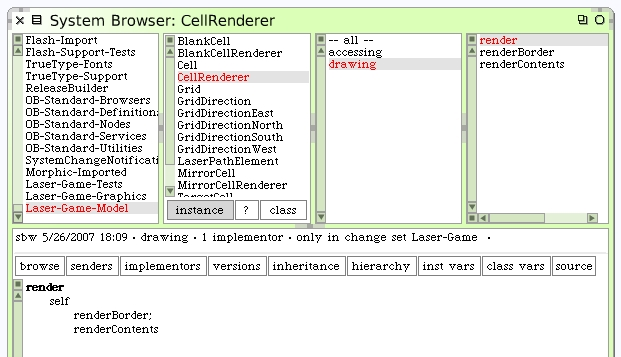
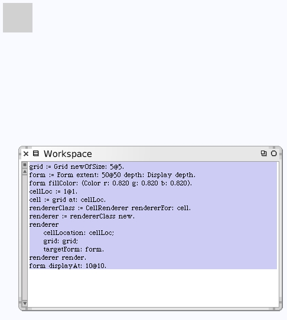
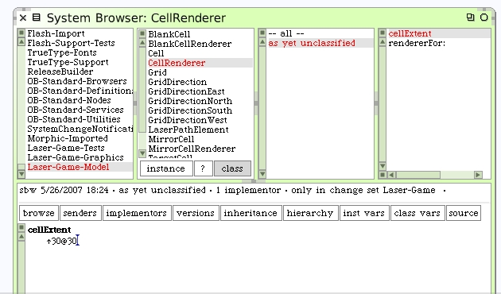

Since we know that every cell will have a border and some contents we can generalize at the abstract class. The different subclasses can draw their own unique contents. The blank cell will have nothing to draw for contents so all we will see are the borders of the cells.
For now, the #renderContents and #renderBorder methods will do nothing. Create those as empty methods.
Let's try it. Select the contents of the workspace and "do-it" (Cmd-d). Nothing appears to happen.
Let's go back and fill in the background of the form.
That works. There's a colored square where our cell will be drawn.
The next step is to draw the cell border onto our form. Even an empty cell will have a border to show. The form we are using is supposed to be the target form that will eventually be the game board. So the form should be much bigger than our cell. In fact, we should eventually draw all the cells onto the form.
This leads us to needing to know more dimensions. We selected an arbitrary form size but there's no basis for it. Furthermore we have yet to decide on game board cell size.
As a simplifying assumption we can say that each cell will be 30x30 pixels. If we assume a single pixel border around each one, the total dimensions for the target form can be determined. Once we decide on the size of the cells, the width of the borders and the grid size of cells (rows * columns) we know the size of the destination form. We should proceed as if the borders themselves will not contribute to overall form size since we can say the borders on drawn inside, along the edges, of our cells.
Where's a good place to put the method that will calulate this? The CellRenderer class can hold the constant that declares the size of each cell.
The method to calculate grid board size should probably be associated with the morph that is the game itself. Let's create our game morph.